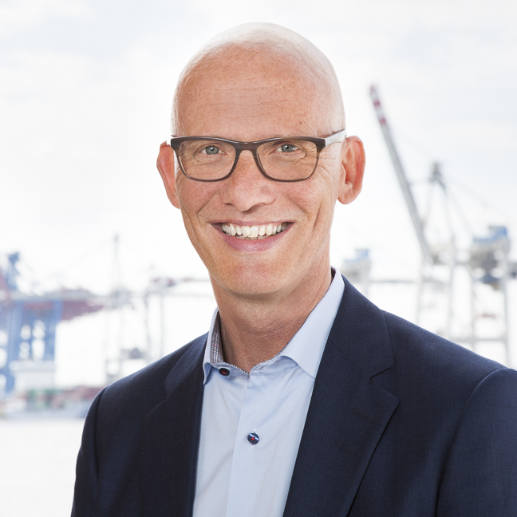

My Mission
Building markets that matter.
Sharpen market readiness. Develop business model and go-to-market strategy. Build new markets and first key accounts.
You have a technologically convincing product or service. But is it also ready for the market? New markets are waiting to be developed – yet without first references, nothing gets off the ground? And sometimes the business model itself is the bottleneck. Or the leadership team lacks the critical counter-voice that challenges decisions before they become expensive.
Would you like a sparring partner for strategy – and someone who gets things done?
That is exactly where I come in. Let's have a conversation.
30 minutes · directly with me · or write directly
Three ways to make your growth predictable.
Go-to-Market Strategy & Business Model
Target markets, value proposition, pricing models, sales channels
Your market entry and sales strategy for technology-based products or services – including the business model behind it.
Market Development & Key Accounts
From zero to trusted partner
New market segments, regions and first strategic customer relationships. Including the opening of new locations and business units as well as structured key account development.
Strategy Sparring & Advisory Board
Strategic guidance on technology and market matters
Scrutinising decisions, sharpening growth targets, setting priorities – as regular sparring or on your advisory board, critical and at eye level.
My Credo
Market success is built on trust and a passion for people and products.
One question has driven me from the very beginning: “How does good technology become a business that lasts?”
To this day, I consider it an extraordinary privilege to be right at the forefront of the innovation industry – rethinking business models and products in ways that sustainably change markets.
I have come to know and build up 15 industries. Always starting from zero.
Part of this is building markets, units and locations, winning over executives and leading with responsibility myself.
I accompanied two companies as they grew from 20 to 1,600 employees in the DACH region and from 180 to 1,800 employees internationally.
Many client relationships have turned into companionships lasting decades.
My experience encompasses 35 years of international consulting and project work. Entrepreneurship within the company, sustainable client relationships and a cumulative order volume in the triple-digit million range.
Client Voices
“Even in difficult situations he scores with short-term and cost-efficient solution proposals and thus becomes an essential pillar for successful projects. He puts the customer and sustainable action at the center of his work.”
“He was always investing a lot of time in trying to understand the customer needs – and in staying close to the project team, especially in storming phases. Approaches all his work in a very structured way, while bringing a lot of creative ideas.”
“His passion, knowledge and network in this market segment is outstanding. He is very open-minded towards change, new innovation and making things possible.”
“Thorsten acted in a highly professional and highly effective manner during both scoping and execution of a complex, long-term project pursued between our organizations. I would gladly look forward to another opportunity to work together.”
“I have quickly come to value him as a very knowledgeable and reliable business partner. He is an excellent and discreet partner/moderator, even in difficult situations.”
“I am impressed by how he lives corporate and personal values, being absolutely authentic and a highly credible ambassador for the company. He surely goes the extra mile – and makes you do the same. And you even enjoy it.”
Career & Education
Career
More than two decades building cross-industry client relationships from the ground up, with cumulative contract values of more than €350 million; many of the major accounts are still active today. During this period, Zühlke grew from 180 to more than 1,800 employees at 17 locations in 10 countries. As an established, trusted advisor, I supported executive teams with a comprehensive understanding of technology trends and entrepreneurial judgement.
Responsibility for delivery, sales and marketing in the utilities, telecommunications and retail sectors. Focus areas: CRM solutions, B2B portals and IT strategy consulting. In 2001, CTP was acquired by Novell.
Selected projects: overall architecture for the collateral management of a major international bank (CH, UK, USA); development of a market risk management system including supervisory approval of the internal models; integration and further development of trade finance systems for clients in Europe, the USA, China and Japan. AMS grew from 20 to 1,600 employees in the DACH region within six years.
Alongside my studies: training Deutsche Bahn employees and staff of external companies in innovative IT topics; managing the IT infrastructure of ten training centres across Germany.
Education
Thesis on the strategic repositioning of business development in a leading IT and engineering services company with ambitious growth targets.
Thesis for Deutsche Bank AG in the context of the merger with Bankers Trust: integration of the global market risk management team.
Thesis for Höchst AG (today Sanofi-Aventis): optimisation of the production planning and control system for a major production plant in Austria.
Let's talk.
Whether it is a specific expansion question or an initial exploration – you will receive a personal, uncomplicated answer. An introductory conversation takes 30 minutes. And you speak directly with me – not with an assistant.
Book a slot: schedule your introductory conversation online
Email: mail@thorstenknauf.de
LinkedIn: linkedin.com/in/thorsten-knauf
